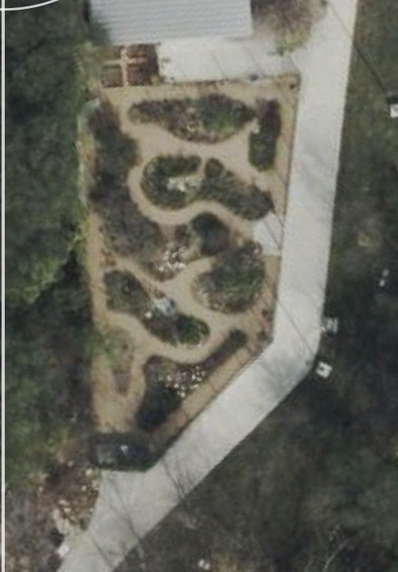

Nectar for adults
Flowers provide fuel for adult butterflies. Observe which blooms are being visited and how that changes through the seasons.
New Braunfels, Texas · A living field guide
A small garden with a long-distance purpose. Explore the paths, watch pollinators at work, and follow a growing bed-by-bed record of the plants that make this habitat possible.
Come for a close look at a working pollinator habitat. The City describes the garden as a place for demonstration, classes, community involvement and guided or self-guided walks.
The map below is a garden observation aid, not a surveyed plan or an accessible-route assessment.
Select a numbered area to begin exploring. These provisional survey markers help organize future plant photographs; they are not official bed numbers or confirmed boundaries.

Base image: supplied garden aerial, IMG_3437 2.jpg. Capture date, north direction and scale are unverified. Markers indicate approximate survey locations only.
A useful butterfly garden supports different needs at different life stages.
Flowers provide fuel for adult butterflies. Observe which blooms are being visited and how that changes through the seasons.
Monarch caterpillars depend on milkweed. Other butterfly species use different hosts. Nectar visits alone do not establish a plant as a caterpillar host.
The City describes native berry-producing plants, larval plants and bird resources here. Our survey will document the individual plants and where they grow.
Explore the bigger journey in Monarchs in Motion →
We will identify the garden’s plants later, one area at a time. Unknown is a starting point—not a species name.
| Survey area | Plant identification | Evidence needed |
|---|---|---|
| Area 1 | Awaiting field survey | Plant photographs, label and date |
| Area 2 | Awaiting field survey | Plant photographs, label and date |
| Area 3 | Awaiting field survey | Plant photographs, label and date |
| Area 4 | Awaiting field survey | Plant photographs, label and date |
| Area 5 | Awaiting field survey | Plant photographs, label and date |
| Area 6 | Awaiting field survey | Plant photographs, label and date |
| Area 7 | Awaiting field survey | Plant photographs, label and date |
| Area 8 | Awaiting field survey | Plant photographs, label and date |
| Area 9 | Awaiting field survey | Plant photographs, label and date |
| Area 10 | Awaiting field survey | Plant photographs, label and date |
Future entries will include common and scientific names, identification confidence, nectar/host role, bloom observations and supporting photographs. Several plants may share one area; markers can be refined after fieldwork.
Sources checked October 26, 2026. Independent visitor guide; not an official City publication.